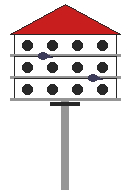

from the back lot, Saline County Kansas
 |
Welcome to my web page!! This is my first try at this so bear with me. My
nephew Travis set it up for me over Christmas and showed me how to put the
pictures on, so if something dont work its probly my fault not his.
I have been a purple martin "landlord" since 1988 when my wife bought me a 6 room house at the farm store as a joke for my birthday. Well it wasnt a joke for very long. Now I got two houses up (a 12 room aluminum and a 12 room wood one I built myself) plus 8 gourds on a rack. This page is mostly about them, how many come back every year and what I learned the hard way. If you have martins or want to get some, I would sure like to hear from you. |
June 14 1999 - 21 pairs this year, best year yet!! First eggs on May 9 in the wood house. Lost one nest of babys to the heat wave last week, compartment #4 on the aluminum house gets the sun all afternoon. Going to paint the roof white this fall and see if that helps.
April 2 1999 - FIRST SCOUT IS BACK. One old male sitting on the porch of the aluminum house at 7:15 this morning when I went out for the paper. Carol says I yelled loud enough to wake the neighbors. Thats 3 days earlier than last year.
March 20 1999 - Houses are cleaned out and back up. Put new pine shavings in. Got the sparrow traps set, already caught 6 house sparrows. (see below)
| Year | First Scout | Pairs | Young Fledged | Notes |
|---|---|---|---|---|
| 1988 | none | 0 | 0 | put house up to late (June) |
| 1989 | ? | 1 | 3 | one pair, I didnt even know till July |
| 1990 | Apr 11 | 2 | 7 | |
| 1991 | Apr 8 | 4 | 15 | |
| 1992 | Apr 9 | 3 | 9 | starlings took over 2 rooms |
| 1993 | Apr 6 | 6 | 22 | built the wood house |
| 1994 | Apr 4 | 9 | 31 | |
| 1995 | Apr 7 | 11 | 28 | cold snap in May, lost a lot |
| 1996 | Apr 3 | 14 | 52 | added the gourd rack |
| 1997 | Apr 5 | 13 | 47 | hawk got at least 2 adults |
| 1998 | Apr 5 | 17 | 63 | |
| 1999 | Apr 2 | 21 | still counting | record! |
Im 46, been married to Carol for 22 years, we have two girls, one at K-State and one still at home. I run the parts counter at an implement dealer so if you need a belt for a 1460 combine I am your man. Besides the martins I like fishing at Kanopolis lake and I bowl Tuesday nights (avg. 164, dont laugh).
You are visitor number
Sign My Guestbook Read My Guestbook
Last updated June 14 1999
since February 1 1998
This page best viewed with Netscape at 800 x 600